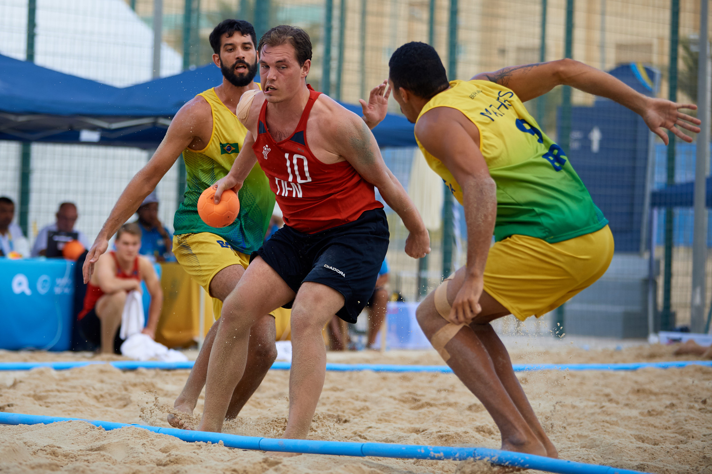
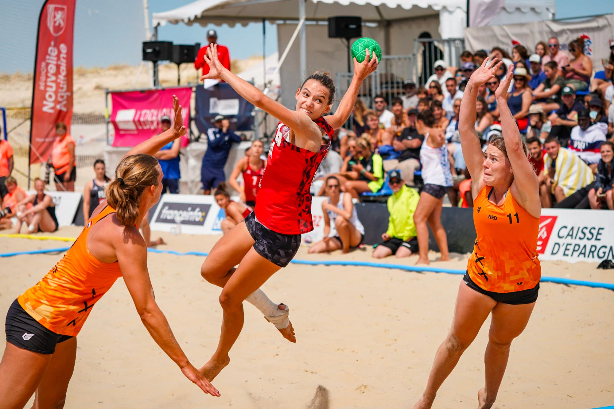
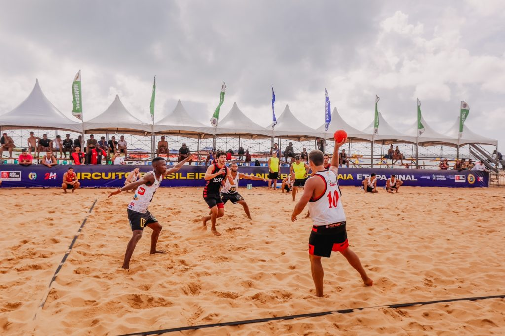
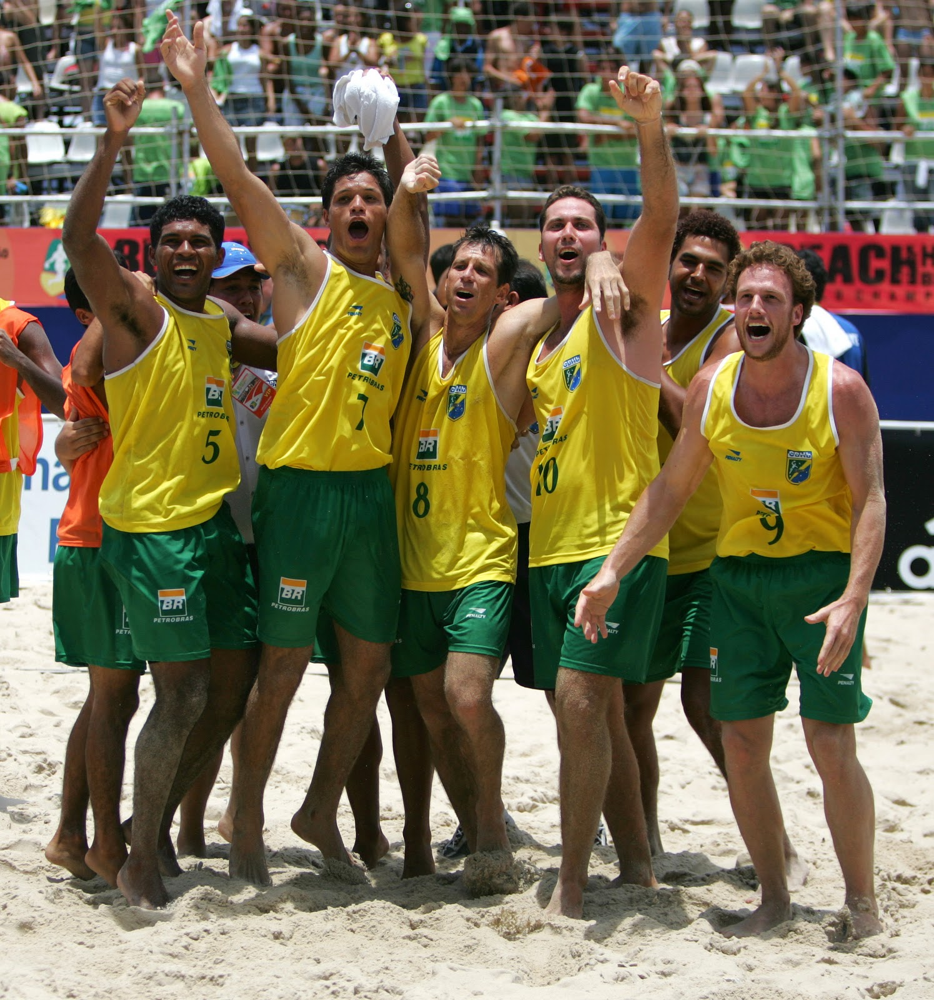
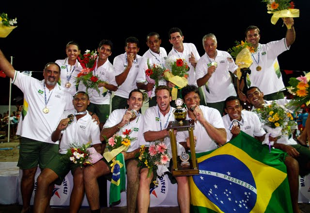
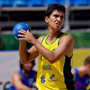

O Handebol de Praia, também conhecido como Beach Handball, é uma variação do handebol tradicional, jogado em uma quadra de areia ao ar livre. Este esporte é conhecido pela sua dinâmica e pelas jogadas acrobáticas, que são uma marca registrada dos atletas. O handebol de praia teve sua origem na Itália, no início da década de 1990. Gianni Buttarelli e Franco Schiano, presidentes de clubes de handebol de quadra, foram os idealizadores dessa modalidade esportiva que tem ganhado popularidade global desde então.


Regras
As regras do handebol de praia consisntem em:
Área de Jogo: O campo tem 27m de comprimento e 12m de largura, com uma área de gol de 6m de raio no centro de cada linha de fundo. Jogadores de linha só podem entrar na área de gol enquanto estiverem no ar.
Duração do Jogo: O jogo consiste em dois sets de 10 minutos cada, com um intervalo de 5 minutos. Se houver empate nos sets, um "shoot-out" (tiros livres diretos) decide o vencedor.
Pontuação: Gols comuns valem 1 ponto, enquanto gols em manobras acrobáticas ou em situações especiais valem 2 pontos.
Jogadores: Cada equipe tem até 10 jogadores, com 4 em campo (3 de linha e 1 goleiro) ao mesmo tempo. As substituições são ilimitadas e feitas na área de substituição.
Substituições: Ilimitadas e podem ser feitas a qualquer momento, desde que os jogadores usem a área de substituição.
Equipamentos: Inclui uma bola especial resistente à água e trajes apropriados para areia (bermudas e tops/shorts). O uso de calçados é proibido.
O Jogo: Inicia-se com um tiro de saída após sorteio. Jogadores podem entrar na área de gol no ar. A bola não pode ser segurada por mais de 3 segundos. Dois árbitros supervisionam o jogo, e há um cronometrista e anotador.
Infrações e Penalidades: Incluem conduta antidesportiva e contato excessivo. Penalidades variam de tiros livres a exclusões temporárias (2 minutos fora de jogo).

Popularidade
O handebol de praia é popular em vários países, especialmente aqueles com uma forte cultura de praia. Os países mais relevantes incluem:
Brasil
Dinamarca
Espanha
Croácia
Itália
Estados Unidos
Campeões
Últimos campeões mundiais:
País
Ano
Local da Competição
Croácia (Masculino)
2022
Heraklion, Grécia
Alemanha (Feminino)
2022
Heraklion, Grécia
Brasil (Masculino)
2018
Kazan, Rússia
Grécia (Feminino)
2018
Kazan, Rússia


Destaque
Bruno Carlos de Oliveira, mais conhecido como Bruninho, é um dos jogadores mais renomados do handebol de praia, atua como especialista e é conhecido por suas habilidades impressionantes e acrobáticas. Ele tem sido uma peça chave para a seleção brasileira, conquistando vários títulos mundiais, incluindo o mundial de handebol de praia na Rússia, em 2018.

Programação
A competição de handebol de praia será incluído nas Olimpíadas de 2024 em Paris como um esporte de exibição, o que significa que ele não contará oficialmente para o quadro de medalhas. Este é um passo importante para o esporte, pois uma exibição bem-sucedida pode levar à inclusão do handebol de praia como um esporte oficial em futuras edições dos Jogos Olímpicos. Está programada para ocorrer nas seguintes datas:
27 de julho de 2024 á 29 de julho de 2024, na Maison do Handball, em Créteil, a 20 km do Estádio Olímpico.
Durante três dias, três equipes com estrelas de nacionalidades mistas do handebol mundial e uma da seleção francesa vão brigar pela vitória, tanto no feminino, quanto no masculino. No total, serão 64 atletas na competição entre os melhores do mundo, sendo 32 homens e 32 mulheres.
Site oficial
Site oficial da confederação brasileira de handebol!